封面·目录·设计背景·痛点需求·市场分析·PEST分析·设计方向·设计调研·市场规模·用户画像·竞品分析·设计过程·设计定位·灵感造型·方案方向·榫卯参考·造型参考·方案迭代·设计展示·3D效果图·使用流程·实物制作·产品致谢
01 / 23
Children's Furniture Design
Since 2026
BUNNY TIDE
兔椅 · 可拆卸扁平化榫卯儿童座椅
以榫卯为核，以童趣为形 — 为小户型家庭打造的安全、环保、可收纳的儿童座椅
2026·小组：苏婕妍 陈涵 王雅洁
BUNNY TIDE · 可拆卸榫卯儿童座椅
01 / 23
封面·目录·设计背景·痛点需求·市场分析·PEST分析·设计方向·设计调研·市场规模·用户画像·竞品分析·设计过程·设计定位·灵感造型·方案方向·榫卯参考·造型参考·方案迭代·设计展示·3D效果图·使用流程·实物制作·产品致谢
02 / 23
CONTENTS
目录
01
设计背景
社会背景 ／ 市场分析 ／ PEST分析 ／ 设计方向
02
设计调研
市场调研 ／ 竞品分析 ／ 用户调研
03
设计过程
设计定位 ／ 灵感来源 ／ 方案方向 ／ 方案更迭
04
设计展示
3D模型 ／ 效果图 ／ 使用流程 ／ 实物制作
4 章 · 从调研到完整设计
02 / 23
封面·目录·设计背景·痛点需求·市场分析·PEST分析·设计方向·设计调研·市场规模·用户画像·竞品分析·设计过程·设计定位·灵感造型·方案方向·榫卯参考·造型参考·方案迭代·设计展示·3D效果图·使用流程·实物制作·产品致谢
03 / 23
Act I
01
设计背景
Design Background
从社会背景到市场趋势，理解儿童家具设计的现实语境。
社会背景·市场分析·PEST分析·设计方向
第一幕 · 研究与发现
03 / 23
封面·目录·设计背景·痛点需求·市场分析·PEST分析·设计方向·设计调研·市场规模·用户画像·竞品分析·设计过程·设计定位·灵感造型·方案方向·榫卯参考·造型参考·方案迭代·设计展示·3D效果图·使用流程·实物制作·产品致谢
04 / 23
Act I · Pain Points
痛点与深层需求
+
[ 家居市场中小户型占比饼图（AI生成） ]
+
[ 消费者对儿童家具健康标准重视度趋势折线图（AI生成） ]
▲ AI 生成 · 数据可视化
▍当前痛点
当前市面上的儿童座椅普遍存在结构固化、收纳不便、安全隐患突出等问题。多数产品采用一体式结构，无法拆分扁平化收纳；传统金属五金连接件棱角锋利，容易造成儿童磕碰划伤；同质化的成人化设计缺乏童趣与审美温度。
▍深层需求
现代家庭对儿童家具的需求不再局限于基础功能，更注重安全健康、空间适配与美育价值。家长高度关注材质环保性与结构安全性，期望通过童趣造型、自然元素与传统工艺结合，满足儿童审美启蒙与情感陪伴的深层精神需求。
空间特征
现代城市居家以小户型为主，空间碎片化、场景复合化。需要家具体量轻巧、可灵活拆装、不占用固定空间，适配多变的居家生活场景。
背景研究 · 用户痛点与需求洞察
04 / 23
封面·目录·设计背景·痛点需求·市场分析·PEST分析·设计方向·设计调研·市场规模·用户画像·竞品分析·设计过程·设计定位·灵感造型·方案方向·榫卯参考·造型参考·方案迭代·设计展示·3D效果图·使用流程·实物制作·产品致谢
05 / 23
Act I · Market
市场分析
儿童家具市场供需现状与设计机遇
品类占比（从高到低）
35%学习桌椅
增长最快 · 核心品类
28%儿童床/高低床
20%收纳柜/书架
12%儿童座椅/小凳
刚需小件 · 目标品类
5%其他
价格带分布
低端 50–300元塑料/普通板材，走量
中端 300–1000元竞争最激烈，实木+基础功能
中高端 1000–5000元全实木、环保、原创设计
高端 5000元以上品牌+智能+定制
总结：儿童座椅属刚需小件，300–800元价格带最受欢迎。小户型专用、可收纳/可拆卸产品溢价明显。
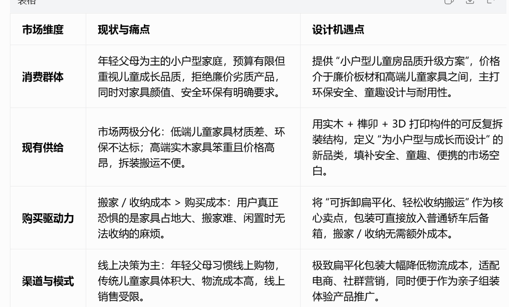
数据来源 · 2025年度儿童家具市场报告
05 / 23
封面·目录·设计背景·痛点需求·市场分析·PEST分析·设计方向·设计调研·市场规模·用户画像·竞品分析·设计过程·设计定位·灵感造型·方案方向·榫卯参考·造型参考·方案迭代·设计展示·3D效果图·使用流程·实物制作·产品致谢
06 / 23
Act I · Analysis
PEST 分析
P
政治环境行业标准趋严，《儿童家具通用技术条件》对环保性、结构安全性提出强制规范。三孩政策配套育儿补贴推动儿童居住空间升级。绿色建材认证利好实木家具。
E
经济环境小户型市场爆发，折叠、模块化家具成新刚需。年轻父母愿为环保、安全、设计感支付溢价。扁平化包装降低物流仓储成本，适配电商模式。
S
社会环境租房人群、小户型家庭成主流，对可拆卸、易收纳家具需求强烈。国潮与传统工艺复兴，榫卯等传统工艺受年轻群体青睐。儿童美育重视度持续提升。
T
技术环境3D打印可定制高精度榫卯构件，实现传统木工与现代智造结合。模块化/扁平化工艺成熟，轻量化包装技术降低运输门槛。电商与短视频提供低成本推广路径。
宏观环境 · PEST 综合分析
06 / 23
封面·目录·设计背景·痛点需求·市场分析·PEST分析·设计方向·设计调研·市场规模·用户画像·竞品分析·设计过程·设计定位·灵感造型·方案方向·榫卯参考·造型参考·方案迭代·设计展示·3D效果图·使用流程·实物制作·产品致谢
07 / 23
Act I · Direction
聚焦小户型家庭的儿童家具痛点，以可拆卸扁平化榫卯结构为核心，打造一款安全环保、童趣、易收纳搬运的实木儿童座椅。
— Bunny Tide 设计方向
可拆卸
扁平化
榫卯结构
安全环保
童趣造型
设计方向 · 核心定位宣言
07 / 23
封面·目录·设计背景·痛点需求·市场分析·PEST分析·设计方向·设计调研·市场规模·用户画像·竞品分析·设计过程·设计定位·灵感造型·方案方向·榫卯参考·造型参考·方案迭代·设计展示·3D效果图·使用流程·实物制作·产品致谢
08 / 23
Act II
02
设计调研
Design Research
深入市场、竞品与用户，为设计决策提供数据支撑。
市场调研·竞品分析·用户调研
第二幕 · 调研与洞察
08 / 23
封面·目录·设计背景·痛点需求·市场分析·PEST分析·设计方向·设计调研·市场规模·用户画像·竞品分析·设计过程·设计定位·灵感造型·方案方向·榫卯参考·造型参考·方案迭代·设计展示·3D效果图·使用流程·实物制作·产品致谢
09 / 23
Act II · Market Size
市场规模
核心数据（2025-2026，权威口径）
2025年中国儿童家具市场规模
2,054.5亿元
同比 +13.8%，2026年预计突破2,300亿元，增速12%+
2025年全球市场规模
311.9亿美元
年增长率 13.37%，儿童家具是家具行业增速最快的细分赛道
儿童家具是家具行业增速最快的细分赛道，小户型、安全环保、多功能产品需求爆发。儿童座椅属于刚需小件，300–800元价格带最受欢迎，小户型专用、可收纳/可拆卸产品溢价明显。
品类占比
学习桌椅35%
增长最快
儿童床/高低床28%
收纳柜/书架20%
儿童座椅/小凳12%
目标品类
其他5%
数据来源 · 2025-2026年儿童家具行业报告
09 / 23
封面·目录·设计背景·痛点需求·市场分析·PEST分析·设计方向·设计调研·市场规模·用户画像·竞品分析·设计过程·设计定位·灵感造型·方案方向·榫卯参考·造型参考·方案迭代·设计展示·3D效果图·使用流程·实物制作·产品致谢
10 / 23
Act II · Persona
目标用户画像分析
👨👩👧刚需型用户
小户型年轻夫妻 · 主流群体
+
[ 刚需型用户场景图 ]
基础信息
26-32岁，一二线城市，70-90㎡，孩子3-8岁
26-32岁，一二线城市，70-90㎡，孩子3-8岁
核心痛点
空间狭小无法收纳，担心五金安全，预算有限
空间狭小无法收纳，担心五金安全，预算有限
行为偏好
电商为主，看重评价，偏好简约百搭
电商为主，看重评价，偏好简约百搭
使用场景
儿童房/客厅角落，换季拆解收纳
儿童房/客厅角落，换季拆解收纳
📦流动型用户
租房/频繁换房家庭
+
[ 流动型用户场景图 ]
基础信息
25-30岁，年轻租房群体，居住不固定
25-30岁，年轻租房群体，居住不固定
核心痛点
频繁搬家成本高，空间不固定需灵活适配
频繁搬家成本高，空间不固定需灵活适配
行为偏好
看重便携拆装，拒绝笨重，决策快
看重便携拆装，拒绝笨重，决策快
使用场景
随时拆装打包，自行搬运不增物流成本
随时拆装打包，自行搬运不增物流成本
🎨品质型用户
中高收入 · 注重审美教育
+
[ 品质型用户场景图 ]
基础信息
30-38岁，改善型住房，孩子2-6岁
30-38岁，改善型住房，孩子2-6岁
核心痛点
缺乏兼具设计感与文化内涵的儿童家具
缺乏兼具设计感与文化内涵的儿童家具
行为偏好
愿为原创设计支付溢价，关注品牌故事
愿为原创设计支付溢价，关注品牌故事
使用场景
儿童房核心家具，兼具实用与装饰功能
儿童房核心家具，兼具实用与装饰功能
调研样本 · N=200 家居消费者
10 / 23
封面·目录·设计背景·痛点需求·市场分析·PEST分析·设计方向·设计调研·市场规模·用户画像·竞品分析·设计过程·设计定位·灵感造型·方案方向·榫卯参考·造型参考·方案迭代·设计展示·3D效果图·使用流程·实物制作·产品致谢
11 / 23
Act II · Competition
竞品分析
StokkeTripp Trapp
挪威经典实木成长椅，自1972年上市，采用欧洲榉木/橡木打造，主打"一张椅子用终身"，是功能性与耐用性兼具的高端成长椅标杆。全生命周期价值：0岁用到成人，人体工学90°坐姿、可调节座板/踏板。稳定性强：Z型结构+实木承重136kg。50年经典设计，二手保值、可传承。
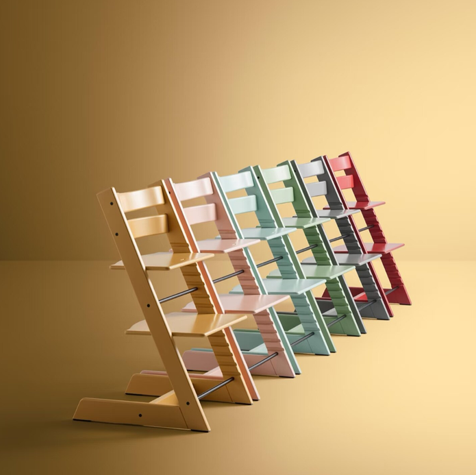
全生命周期
承重136kg
50年经典
二手保值
哈木的房间Hamuoo 十二生肖
中国原创国潮实木儿童椅，以北美黑胡桃、硬枫木为材，采用传统榫卯工艺与圆角打磨。产品主打十二生肖萌趣造型，兼具艺术感与安全性，聚焦1-6岁儿童。名贵实木+榫卯无五金、木蜡油环保。全圆角打磨、无尖锐。情感收藏价值：出生礼/生肖纪念礼，可留存童年记忆。
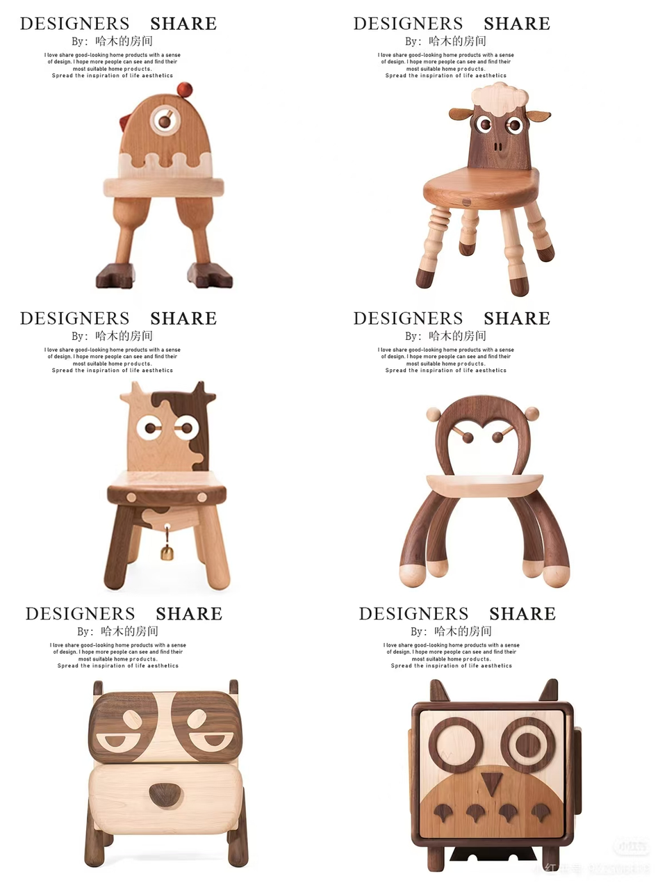
北美黑胡桃
榫卯无五金
全圆角安全
生肖纪念
差异化机会：Bunny Tide 取 Stokke 的功能性 + 哈木的工艺美感，聚焦可拆卸扁平化市场空白，以更亲民的海洋板+3D打印方案切入小户型刚需市场。
竞品定位 · Stokke vs Hamuoo 差异化分析
11 / 23
封面·目录·设计背景·痛点需求·市场分析·PEST分析·设计方向·设计调研·市场规模·用户画像·竞品分析·设计过程·设计定位·灵感造型·方案方向·榫卯参考·造型参考·方案迭代·设计展示·3D效果图·使用流程·实物制作·产品致谢
12 / 23
Act III
03
设计过程
Design Process
从定位到灵感，从草图到方案，逐步构建产品核心。
设计定位·灵感来源·方案方向·方案更迭
第三幕 · 构思与推演
12 / 23
封面·目录·设计背景·痛点需求·市场分析·PEST分析·设计方向·设计调研·市场规模·用户画像·竞品分析·设计过程·设计定位·灵感造型·方案方向·榫卯参考·造型参考·方案迭代·设计展示·3D效果图·使用流程·实物制作·产品致谢
13 / 23
Act III · Positioning
设计定位
Who
面向25-35岁城市年轻育儿家庭，涵盖小户型刚需家庭与频繁迁居的租房家庭。
What
结合传统榫卯与3D打印的可拆卸扁平化实木儿童座椅，融合兔子童趣造型。
Why
针对收纳困难、安全隐患、设计同质化的市场痛点，弥补平价优质产品的空白。
Where
适配城市小户型，用于儿童阅读、用餐、玩耍，支持拆装搬运与搬家复用。
When
适配3-5岁儿童成长使用，实木榫卯结构延长产品生命周期，可反复拆装复用。
How
采用榫卯拼接结构提升安全性，通过可拆卸设计解决收纳问题，兼顾功能与美育。
设计定位 · 5W1H 产品定义框架
13 / 23
封面·目录·设计背景·痛点需求·市场分析·PEST分析·设计方向·设计调研·市场规模·用户画像·竞品分析·设计过程·设计定位·灵感造型·方案方向·榫卯参考·造型参考·方案迭代·设计展示·3D效果图·使用流程·实物制作·产品致谢
14 / 23
Act III · Inspiration
灵感来源 · 造型意象

主体轮廓来源
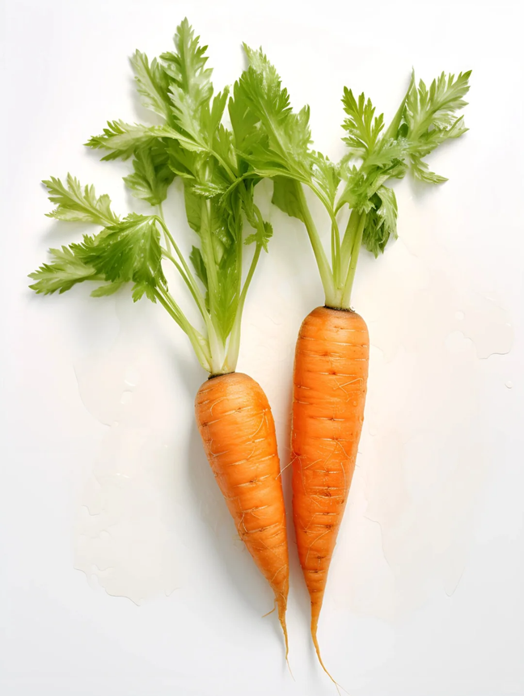
榫件设计来源

结构与形态研究
灵感来源 · 兔子 × 胡萝卜 × 儿童家具
14 / 23
封面·目录·设计背景·痛点需求·市场分析·PEST分析·设计方向·设计调研·市场规模·用户画像·竞品分析·设计过程·设计定位·灵感造型·方案方向·榫卯参考·造型参考·方案迭代·设计展示·3D效果图·使用流程·实物制作·产品致谢
15 / 23
Act III · Direction
方案方向 · 结构推演
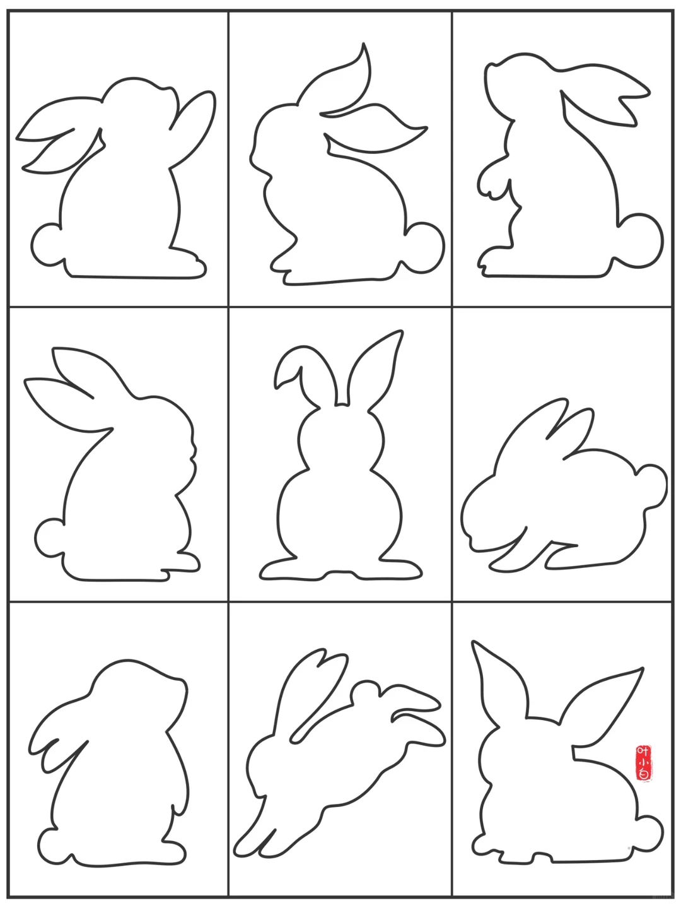
→
推演迭代
→
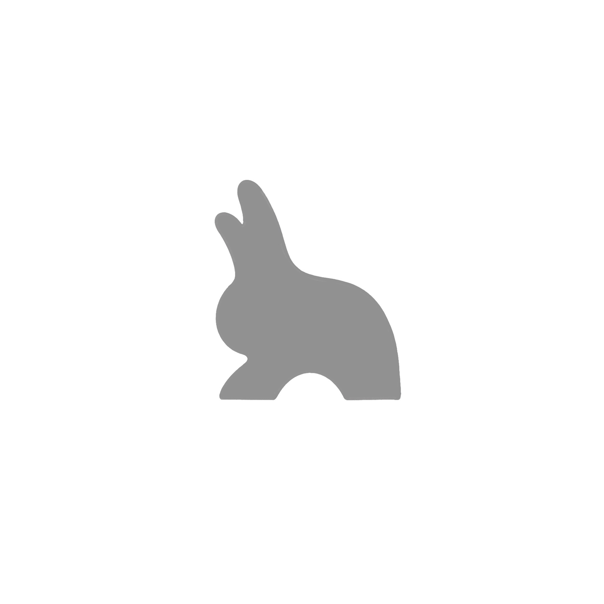
方案推演 · 从概念到结构方向
15 / 23
封面·目录·设计背景·痛点需求·市场分析·PEST分析·设计方向·设计调研·市场规模·用户画像·竞品分析·设计过程·设计定位·灵感造型·方案方向·榫卯参考·造型参考·方案迭代·设计展示·3D效果图·使用流程·实物制作·产品致谢
16 / 23
Act III · Joinery
榫卯外形参考
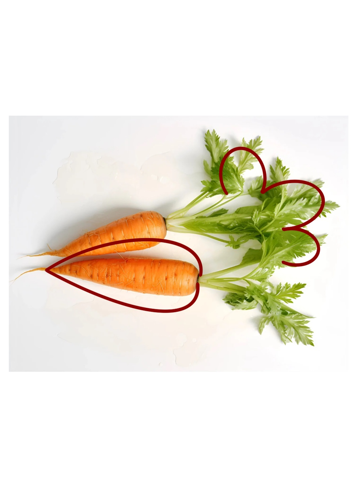
传统木工连接方式研究
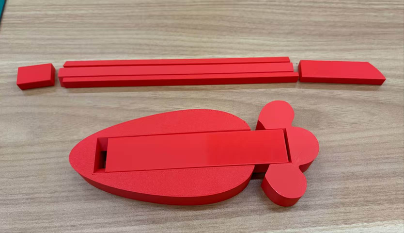
自锁紧结构原理分析
榫卯研究 · 传统工艺与现代应用
16 / 23
封面·目录·设计背景·痛点需求·市场分析·PEST分析·设计方向·设计调研·市场规模·用户画像·竞品分析·设计过程·设计定位·灵感造型·方案方向·榫卯参考·造型参考·方案迭代·设计展示·3D效果图·使用流程·实物制作·产品致谢
17 / 23
Act III · Form
造型参考
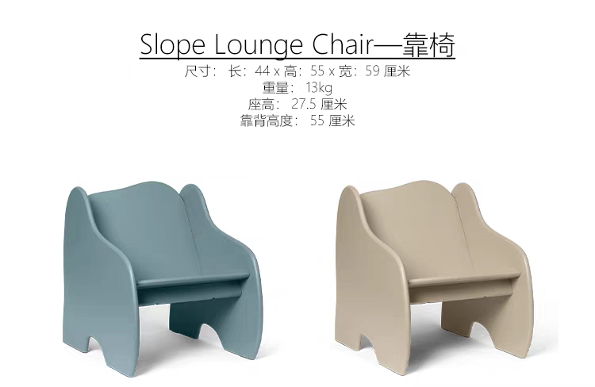
造型设计语言
椅身造型提取兔子轮廓——圆润的靠背如兔耳般俏皮，坐面宽大平稳如兔身，椅腿仿若兔足轻巧着地。整体造型避免锐角，以流畅弧线贯穿各构件，在保持结构强度的同时传递温和亲近的视觉感受。
榫件造型提取胡萝卜外形作为视觉点缀——3D打印的彩色榫头不仅是结构连接件，更成为椅子上的趣味识别符号，让孩子在拼装过程中感受到发现的乐趣。
海洋板的天然木纹肌理与3D打印榫头的现代质感形成材质对比——传统与现代在同一件家具上对话，既是对榫卯工艺的当代致敬，也是儿童美育的无声载体。
造型研究 · 童趣与结构的平衡
17 / 23
封面·目录·设计背景·痛点需求·市场分析·PEST分析·设计方向·设计调研·市场规模·用户画像·竞品分析·设计过程·设计定位·灵感造型·方案方向·榫卯参考·造型参考·方案迭代·设计展示·3D效果图·使用流程·实物制作·产品致谢
18 / 23
Act III · Iteration
方案更迭 · 手绘草图
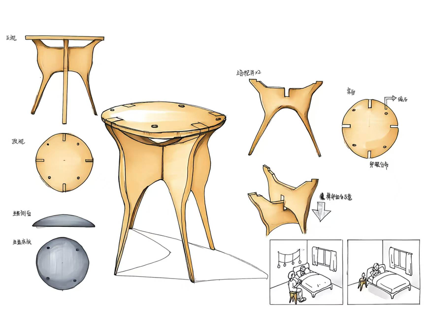
01 · 十字榫结构
初期方案以十字榫为核心连接件，追求极致的结构简化。但在承重测试中发现侧向稳定性不足，需增加辅助支撑。
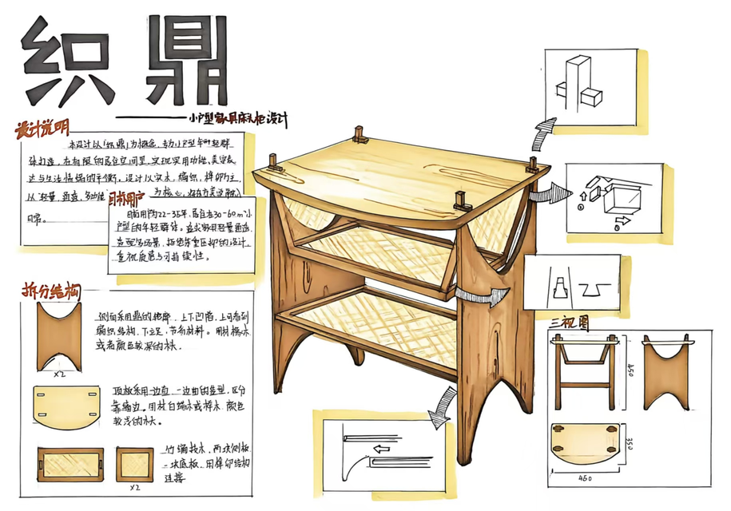
02 · 以鼎为意象
借鉴青铜鼎的三足结构增强稳定性。但造型偏向成人化、庄重感过强，缺少儿童家具应有的亲和力。
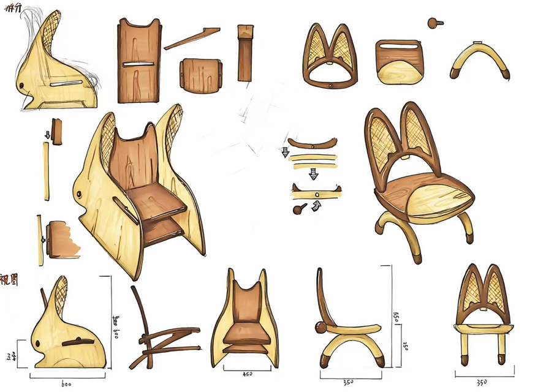
03 · 专注儿童家具
回归儿童为本的设计理念，以兔子造型为核心，榫卯结构巧妙藏于造型之中。实现结构稳固、童趣、拆装便捷的平衡。
方案迭代 · 三次关键设计转折
18 / 23
封面·目录·设计背景·痛点需求·市场分析·PEST分析·设计方向·设计调研·市场规模·用户画像·竞品分析·设计过程·设计定位·灵感造型·方案方向·榫卯参考·造型参考·方案迭代·设计展示·3D效果图·使用流程·实物制作·产品致谢
19 / 23
Act IV
04
设计展示
Design Showcase
从数字模型到实物制作，完整呈现产品全貌。
3D模型·效果图·使用流程·实物制作
第四幕 · 呈现与落地
19 / 23
封面·目录·设计背景·痛点需求·市场分析·PEST分析·设计方向·设计调研·市场规模·用户画像·竞品分析·设计过程·设计定位·灵感造型·方案方向·榫卯参考·造型参考·方案迭代·设计展示·3D效果图·使用流程·实物制作·产品致谢
20 / 23
Act IV · 3D & Render
3D模型与效果图
Bunny Tide 兔椅 · 数字原型呈现
基于榫卯结构与兔子造型的3D数字模型，完整呈现各构件之间的装配关系与最终视觉效果。采用榫卯徒手拆装结构，以模块化扁平化组合为核心，构件依托海洋板搭配3D打印榫头替代外露五金。
材质
海洋板 + 3D打印PLA榫头
海洋板 + 3D打印PLA榫头
结构
燕尾榫 + 卡件榫咬合限位，侧板与坐/靠板相互锁紧
燕尾榫 + 卡件榫咬合限位，侧板与坐/靠板相互锁紧
表面
木蜡油环保处理，无毒安全，触感亲和
木蜡油环保处理，无毒安全，触感亲和
特色
整体无需工具快速拆装，兼具环保安全与兔子造型童趣
整体无需工具快速拆装，兼具环保安全与兔子造型童趣
¥ 399–699
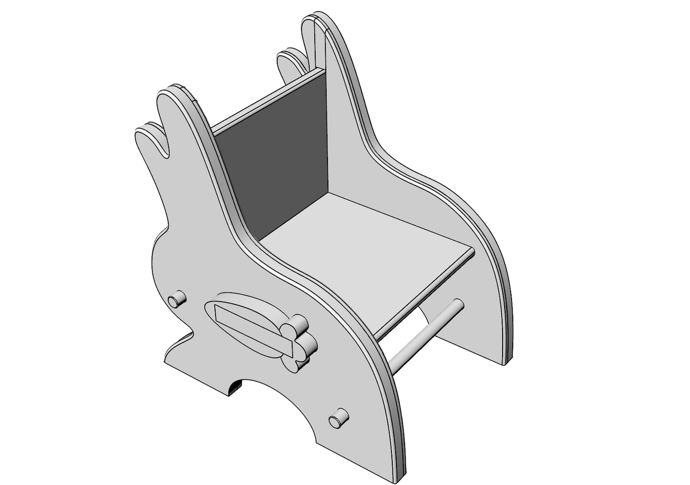
产品定稿 · 数字模型与规格展示
20 / 23
封面·目录·设计背景·痛点需求·市场分析·PEST分析·设计方向·设计调研·市场规模·用户画像·竞品分析·设计过程·设计定位·灵感造型·方案方向·榫卯参考·造型参考·方案迭代·设计展示·3D效果图·使用流程·实物制作·产品致谢
21 / 23
Act IV · Workflow
使用流程
五步拆装 · 从开箱到收纳
01
开箱取出
扁平化包装，各构件分类摆放
02
拼接组装
榫卯对接，徒手完成主体拼接
03
锁紧固定
侧板与坐/靠板相互锁紧自固定
04
日常使用
儿童阅读、用餐、玩耍多场景
05
拆解收纳
反向拆解，扁平收纳进储物柜
+
[ 使用流程图 · 五步拆装示意 ]
使用体验 · 从开箱到收纳全流程
21 / 23
封面·目录·设计背景·痛点需求·市场分析·PEST分析·设计方向·设计调研·市场规模·用户画像·竞品分析·设计过程·设计定位·灵感造型·方案方向·榫卯参考·造型参考·方案迭代·设计展示·3D效果图·使用流程·实物制作·产品致谢
22 / 23
Act IV · Making
实物制作过程
+
[ CNC切割海洋板 ]
+
[ 3D打印PLA榫头 ]
+
[ 手工打磨倒角 ]
+
[ 榫卯组装测试 ]
+
[ 木蜡油表面处理 ]
+
[ Bunny Tide兔椅成品 ]
从图纸到实物 · 制作全流程记录
22 / 23
封面·目录·设计背景·痛点需求·市场分析·PEST分析·设计方向·设计调研·市场规模·用户画像·竞品分析·设计过程·设计定位·灵感造型·方案方向·榫卯参考·造型参考·方案迭代·设计展示·3D效果图·使用流程·实物制作·产品致谢
23 / 23
Fin.
BUNNY TIDE
Thank You
以榫卯连接传统与未来，用童趣温暖每一个小家。
Bunny Tide 兔椅 · 可拆卸扁平化榫卯儿童座椅
苏婕妍·陈涵·王雅洁·2026
BUNNY TIDE · 可拆卸榫卯儿童座椅
23 / 23